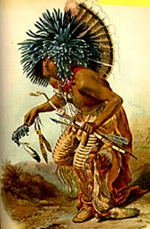

| The Shoshone Indians
were sometimes called “Digger Indians.” To other people they were also
known as the Snake Nation. They had a population of 9,125. They lived on both
the east and the west sides of the Rocky Mountains. The people who lived west
of the Rocky Mountains lived in roofless grass huts and hunted fish, birds,
and rabbits. The Indians that lived east and up north of the Rocky Mountains
lived in tepees and hunted buffalo. When the Shoshone were actually in the
mountains they lived on roots, berries, and infrequently, fish and small
game. The Shoshone usually lived in small groups of ten people or less. One
tribe, the Lemhi, were great horsemen and had many brave warriors, but they
were very poor and hungry. Their enemies were the Blackfeet, Atsani, and
the Hidsastas. They had many things that the Shoshone didn’t such as rifles.
They forced the Shoshone away from the plains and the great buffalo hunting
up in the mountains. The Shoshone also was the key to success to the Lewis
and Clark expedition. They let them pass through their land when Sacagawea
was leading them to the Pacific Ocean. |
| There are many reasons why I
think that the Shoshone had great family ways. They were allowed to have more
than one marriage partner at a time. Many women who got married would go
to live with the men’s family. Both women and men had equally and important
roles in helping the family survive. The men hunted and served as chiefs or
leaders of their bands. The women did most of the child raising, but they
also gathered plants to use around the house. Even though the children rarely
misbehaved, the Shoshone parents did not spank or punish them. Many Indians
thought that punishment would break the young people’s spirits. |
| Would you believe that the Shoshone
made different types of clothing for almost every season? They wore very little
clothing in the summer. The men wore a loincloth, and the women wore a kind
of apron. In the winter they made warm robes out of rabbit and other furs
to keep them warm during the snowy season. They mostly tried to make their
clothes as comfortable as possible so it would still be easy to do work around
the house and anywhere else where they needed to do their daily chores. The
children liked their comfortable clothes because they were easy to play outside
in. |
 |
| The Indians believed in many
different religions. One religion is called Duma. The Appah also called it
Our Father or The Creator. The Shoshones’ who believed in this religion would
face the sun in the east and sing a prayer song to Appah. They believed that
the sun’s rays would carry their words up to him. Another common religion
would be the Gost Dance. It led to the 1890 massacre at Wounded Knee. It was
also a widespread Native American religious movement. The last common religion
that the Shoshones’ believed in was the Sun Dance. It celebrates the renewal
of the spiritual rebirth of participants and their relatives. The Sun Dance
also reflects relationships with nature that are a characteristic of the
Plains ethos, and includes symbolic representation of various animal species
such as the eagle and the buffalo. These species once played vital roles
in the lives of the people and are still going along with their sacredness
and special powers. There were also many tales about the spirit world and
animal nation that were once told and passed on from generation to generation.
Many of the Shoshone’s tales had a moral lesson to them. One example of one
of their tales is called Nunumbi or “Little People”. They were thought to
kill animals with sticks and stones, and also to shoot invisible arrows at
people they disliked. |
| The Indians main transportation
was horses. The explorers first brought horses to America in the 1500’s. The
horses became a very valuable way to get around to different places a lot
faster than on foot. The horses also allowed the Shoshone to travel to great
distances. They roamed the areas of what are now the states of Wyoming, Utah,
Nevada, and Idaho. The horses were useful when Lewis, Clark, and some the
rest of the people that came along with them because they needed horses for
the rest of their journey. They traded the Indians some of their rifles for
a couple of the Shoshone’s horses. |
| There were a lot of important
people in the Shoshone Indian tribes. Washakie was a great chief and leader
for the Eastern Shoshone Indians. He was noted for his exploits in fighting,
and also for his friendship with the white pioneers who came along. When wagon
trains were passing through Shoshone country in the 1850’s, he and his people
aided the overland travelers in fording streams and recovering stray cattle.
He was also a scout for the U.S. Army. Chief Little Soldier, another important
chief, led the Northwestern Shoshone down to its entry into the Great Salt
Lake. Another great person was Chief Pocatello. He commanded a tribe of Shoshone
Indians, who ranged from Grouse Creek in the northwestern Utah eastward along
the northern shore of Great Salt Lake to the Bear River. Which leads to another
important person, Chief Bear Hunter. He resided in Cache Valley and along
the lower reaches of the Bear River. Bear Hunter was also regarded as the
principal leader of the Northwestern Shoshone, being designated by Mormon
settlers as the war chief who held equal status with Washakie when the Eastern
and Northwestern groups met in their annual get-together each summer in Round
Valley, just north of Bear Lake. Chief Pocatello was a great person because
he led his band on numerous hunts for buffalo in the Wyoming area. Sacagawea
was also an important person to the Shoshone and to the Lewis and Clark Expedition.
She led Lewis and Clark through the west to the Pacific Ocean. She dug up
roots and found berries to help feed them. She also helped them when one
of their boats tipped over. She saved most of their supplies that were starting
to float off. |
| The Shoshone Indians have great
believes, family ways, and some very important people. They used what they
had to live on wisely. They had good life ways, and they respected each other
well. I think that the Shoshone Indians are a great tribe to Native Americans
all around. |
| Brooke Alejos Rossville Jr. High 2002 Plains Project Bibliography |